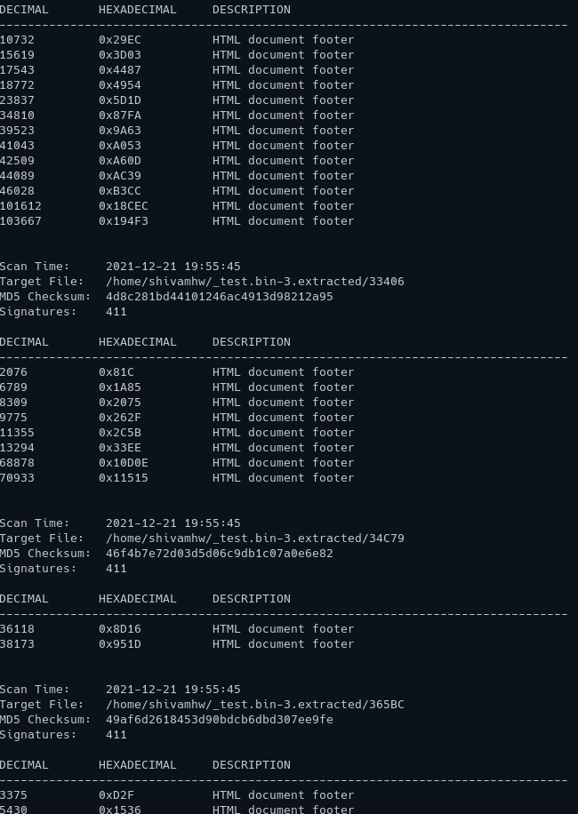
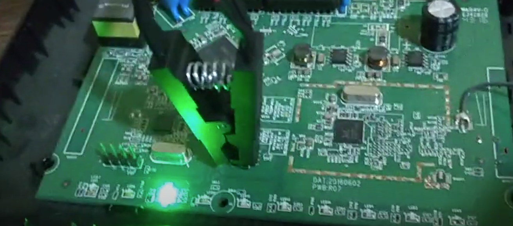

Some observations
1. Dlink using flash chip only for webserver componants.
after extracting the firmware directly from router and comparing it with the firmware downloaded from internet, it can be seen that firmware directly from chip does not have the root filesystem
it only has the files from the webUI. This could be because the main firmware reside in some other part of the circuit.

2. In d link, additional componants draw power when extracting firmware with SPI protocol. If the drawn current is greater than 30mA than rpi will not be able to supply the power to chip
this is a good example of why a variable power supply is needed for the tool.
here you can see the light is drawing unnecessary power which can cause trouble. So using additional power supply is recommanded.
